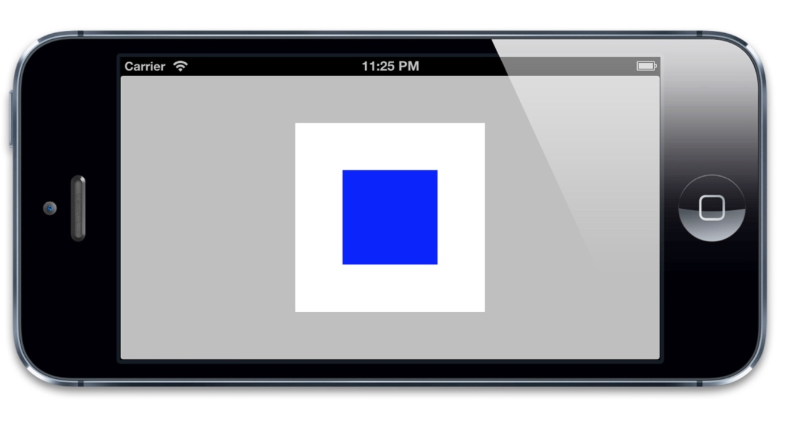
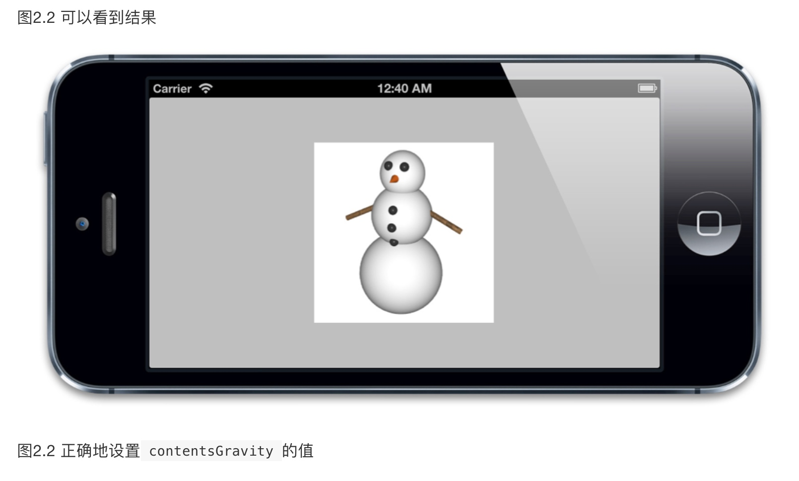
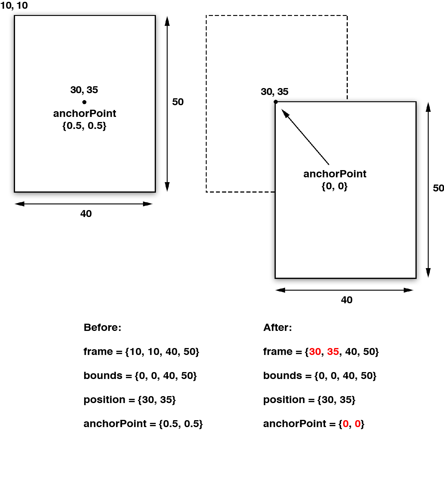

iOS核心动画高级技巧-Gitbook
介绍
iOS Core Animation: Advanced Techniques中文译本
gitbook上的地址
本书翻译自：iOS Core Animation: Advanced Techniques
知识是人类进步的阶梯
翻译，喵~
译者为：
AttackOnDobby
evenluo
(排名不分先后，感谢他俩的付出！)
我（ZsIsMe）将译者的稿件搬运至gitbook上，方便大家查看。
如果在阅读过程中发现有什么问题，请到这里（本电子书在github上的地址）开issue，我会尽快改过来。
2015.2.9 电子书在制作过程中，章节可能会不断添加和修改或者合并。
图层数
1.1 图层的树状结构
巨妖有图层，洋葱也有图层，你有吗？我们都有图层 -- 史莱克
Core Animation其实是一个令人误解的命名。你可能认为它只是用来做动画的，但实际上它是从一个叫做Layer Kit这么一个不怎么和动画有关的名字演变而来，所以做动画这只是Core Animation特性的冰山一角。
Core Animation是一个复合引擎，它的职责就是尽可能快地组合屏幕上不同的可视内容，这个内容是被分解成独立的图层，存储在一个叫做图层树的体系之中。于是这个树形成了UIKit以及在iOS应用程序当中你所能在屏幕上看见的一切的基础。
在我们讨论动画之前，我们将从图层树开始，涉及一下Core Animation的静态组合以及布局特性。
图层与视图
如果你曾经在iOS或者Mac OS平台上写过应用程序，你可能会对视图的概念比较熟悉。一个视图就是在屏幕上显示的一个矩形块（比如图片，文字或者视频），它能够拦截类似于鼠标点击或者触摸手势等用户输入。视图在层级关系中可以互相嵌套，一个视图可以管理它的所有子视图的位置。图1.1显示了一种典型的视图层级关系
在iOS当中，所有的视图都从一个叫做UIVIew的基类派生而来，UIView可以处理触摸事件，可以支持基于Core Graphics绘图，可以做仿射变换（例如旋转或者缩放），或者简单的类似于滑动或者渐变的动画。
CALayer
CALayer 类在概念上和 UIView 类似，同样也是一些被层级关系树管理的矩形块，同样也可以包含一些内容（像图片，文本或者背景色），管理子图层的位置。它们有一些方法和属性用来做动画和变换。和UIView最大的不同是CALayer不处理用户的交互。
CALayer 并不清楚具体的响应链（iOS通过视图层级关系用来传送触摸事件的机制），于是它并不能够响应事件，即使它提供了一些方法来判断是否一个触点在图层的范围之内（具体见第三章，“图层的几何学”）
平行的层级关系
每一个UIview都有一个CALayer实例的图层属性，也就是所谓的backing layer，视图的职责就是创建并管理这个图层，以确保当子视图在层级关系中添加或者被移除的时候，他们关联的图层也同样对应在层级关系树当中有相同的操作（见图1.2）。
实际上这些背后关联的图层才是真正用来在屏幕上显示和做动画，UIView仅仅是对它的一个封装，提供了一些iOS类似于处理触摸的具体功能，以及Core Animation底层方法的高级接口。
但是为什么iOS要基于UIView和CALayer提供两个平行的层级关系呢？为什么不用一个简单的层级来处理所有事情呢？原因在于要做职责分离，这样也能避免很多重复代码。在iOS和Mac OS两个平台上，事件和用户交互有很多地方的不同，基于多点触控的用户界面和基于鼠标键盘有着本质的区别，这就是为什么iOS有UIKit和UIView，但是Mac OS有AppKit和NSView的原因。他们功能上很相似，但是在实现上有着显著的区别。
绘图，布局和动画，相比之下就是类似Mac笔记本和桌面系列一样应用于iPhone和iPad触屏的概念。把这种功能的逻辑分开并应用到独立的Core Animation框架，苹果就能够在iOS和Mac OS之间共享代码，使得对苹果自己的OS开发团队和第三方开发者去开发两个平台的应用更加便捷。
实际上，这里并不是两个层级关系，而是四个，每一个都扮演不同的角色，除了视图层级和图层树之外，还存在呈现树和渲染树，将在第七章“隐式动画”和第十二章“性能调优”分别讨论。
1.2 图层的能力
如果说CALayer是UIView内部实现细节，那我们为什么要全面地了解它呢？苹果当然为我们提供了优美简洁的UIView接口，那么我们是否就没必要直接去处理Core Animation的细节了呢？
某种意义上说的确是这样，对一些简单的需求来说，我们确实没必要处理CALayer，因为苹果已经通过UIView的高级API间接地使得动画变得很简单。
但是这种简单会不可避免地带来一些灵活上的缺陷。如果你略微想在底层做一些改变，或者使用一些苹果没有在UIView上实现的接口功能，这时除了介入Core Animation底层之外别无选择。
我们已经证实了图层不能像视图那样处理触摸事件，那么他能做哪些视图不能做的呢？这里有一些UIView没有暴露出来的CALayer的功能：
- 阴影，圆角，带颜色的边框
- 3D变换
- 非矩形范围
- 透明遮罩
- 多级非线性动画
我们将会在后续章节中探索这些功能，首先我们要关注一下在应用程序当中CALayer是怎样被利用起来的。
1.3 使用图层
首先我们来创建一个简单的项目，来操纵一些layer的属性。打开Xcode，使用Single View Application模板创建一个工程。
在屏幕中央创建一个小视图（大约200 X 200的尺寸），当然你可以手工编码，或者使用Interface Builder（随你方便）。确保你的视图控制器要添加一个视图的属性以便可以直接访问它。我们把它称作layerView。
运行项目，应该能在浅灰色屏幕背景中看见一个白色方块（图1.3），如果没看见，可能需要调整一下背景window或者view的颜色
图1.3 灰色背景上的一个白色UIView
这并没有什么令人激动的地方，我们来添加一个色块，在白色方块中间添加一个小的蓝色块。
我们当然可以简单地在已经存在的UIView上添加一个子视图（随意用代码或者IB），但这不能真正学到任何关于图层的东西。
于是我们来创建一个CALayer，并且把它作为我们视图相关图层的子图层。尽管UIView类的接口中暴露了图层属性，但是标准的Xcode项目模板并没有包含Core Animation相关头文件。所以如果我们不给项目添加合适的库，是不能够使用任何图层相关的方法或者访问它的属性。所以首先需要添加QuartzCore框架到Build Phases标签（图1.4），然后在vc的.m文件中引入库。
图1.4 把QuartzCore库添加到项目
之后就可以在代码中直接引用CALayer的属性和方法。在清单1.1中，我们用创建了一个CALayer，设置了它的backgroundColor属性，然后添加到layerView背后相关图层的子图层（这段代码的前提是通过IB创建了layerView并做好了连接），图1.5显示了结果。
#import "ViewController.h"
#import
@interface ViewController ()
@property (nonatomic, weak) IBOutlet UIView *layerView;
@end
@implementation ViewController
- (void)viewDidLoad
{
[super viewDidLoad];
//create sublayer
CALayer *blueLayer = [CALayer layer];
blueLayer.frame = CGRectMake(50.0f, 50.0f, 100.0f, 100.0f);
blueLayer.backgroundColor = [UIColor blueColor].CGColor;
//add it to our view
[self.layerView.layer addSublayer:blueLayer];
}
@end

图1.5 白色UIView内部嵌套的蓝色CALayer
一个视图只有一个相关联的图层（自动创建），同时它也可以支持添加无数多个子图层，从清单1.1可以看出，你可以显示创建一个单独的图层，并且把它直接添加到视图关联图层的子图层。尽管可以这样添加图层，但往往我们只是见简单地处理视图，他们关联的图层并不需要额外地手动添加子图层。
在Mac OS平台，10.8版本之前，一个显著的性能缺陷就是由于用了视图层级而不是单独在一个视图内使用CALayer树状层级。但是在iOS平台，使用轻量级的UIView类并没有显著的性能影响（当然在Mac OS 10.8之后，NSView的性能同样也得到很大程度的提高）。
使用图层关联的视图而不是CALayer的好处在于，你能在使用所有CALayer底层特性的同时，也可以使用UIView的高级API（比如自动排版，布局和事件处理）。
然而，当满足以下条件的时候，你可能更需要使用CALayer而不是UIView:
- 开发同时可以在Mac OS上运行的跨平台应用
- 使用多种CALayer的子类（见第六章，“特殊的图层“），并且不想创建额外的UIView去包封装它们所有
- 做一些对性能特别挑剔的工作，比如对UIView一些可忽略不计的操作都会引起显著的不同（尽管如此，你可能会直接想使用OpenGL绘图）
但是这些例子都很少见，总的来说，处理视图会比单独处理图层更加方便。
1.4 总结
这一章阐述了图层的树状结构，说明了如何在iOS中由UIView的层级关系形成的一种平行的CALayer层级关系，在后面的实验中，我们创建了自己的CALayer，并把它添加到图层树中。
在第二章，“图层关联的图片”，我们将要研究一下CALayer关联的图片，以及Core Animation提供的操作显示的一些特性。
2 .寄宿图
我们在第一章『图层树』中介绍了CALayer类并创建了一个简单的有蓝色背景的图层。背景颜色还好啦，但是如果它仅仅是展现了一个单调的颜色未免也太无聊了。事实上CALayer类能够包含一张你喜欢的图片，这一章节我们将来探索CALayer的寄宿图（即图层中包含的图）。
2.1 contents属性
CALayer 有一个属性叫做contents，这个属性的类型被定义为id，意味着它可以是任何类型的对象。在这种情况下，你可以给contents属性赋任何值，你的app仍然能够编译通过。但是，在实践中，如果你给contents赋的不是CGImage，那么你得到的图层将是空白的。
contents这个奇怪的表现是由Mac OS的历史原因造成的。它之所以被定义为id类型，是因为在Mac OS系统上，这个属性对CGImage和NSImage类型的值都起作用。如果你试图在iOS平台上将UIImage的值赋给它，只能得到一个空白的图层。一些初识Core Animation的iOS开发者可能会对这个感到困惑。
头疼的不仅仅是我们刚才提到的这个问题。事实上，你真正要赋值的类型应该是CGImageRef，它是一个指向CGImage结构的指针。UIImage有一个CGImage属性，它返回一个"CGImageRef",如果你想把这个值直接赋值给CALayer的contents，那你将会得到一个编译错误。因为CGImageRef并不是一个真正的Cocoa对象，而是一个Core Foundation类型。
尽管Core Foundation类型跟Cocoa对象在运行时貌似很像（被称作toll-free bridging），他们并不是类型兼容的，不过你可以通过bridged关键字转换。如果要给图层的寄宿图赋值，你可以按照以下这个方法：
layer.contents = (__bridge id)image.CGImage;
如果你没有使用ARC（自动引用计数），你就不需要__bridge这部分。但是，你干嘛不用ARC？！
让我们来继续修改我们在第一章新建的工程，以便能够展示一张图片而不仅仅是一个背景色。我们已经用代码的方式建立一个图层，那我们就不需要额外的图层了。那么我们就直接把layerView的宿主图层的contents属性设置成图片。
清单2.1 更新后的代码。
@implementation ViewController
- (void)viewDidLoad
{
[super viewDidLoad]; //load an image
UIImage *image = [UIImage imageNamed:@"Snowman.png"];
//add it directly to our view's layer
self.layerView.layer.contents = (__bridge id)image.CGImage;
}
@end
我们用这些简单的代码做了一件很有趣的事情：我们利用CALayer在一个普通的UIView中显示了一张图片。这不是一个UIImageView，它不是我们通常用来展示图片的方法。通过直接操作图层，我们使用了一些新的函数，使得UIView更加有趣了。
contentGravity
你可能已经注意到了我们的雪人看起来有点。。。胖 ＝＝！ 我们加载的图片并不刚好是一个方的，为了适应这个视图，它有一点点被拉伸了。在使用UIImageView的时候遇到过同样的问题，解决方法就是把contentMode属性设置成更合适的值，像这样：
view.contentMode = UIViewContentModeScaleAspectFit;
这个方法基本和我们遇到的情况的解决方法已经接近了（你可以试一下 :) ），不过UIView大多数视觉相关的属性比如contentMode，对这些属性的操作其实是对对应图层的操作。
CALayer与contentMode对应的属性叫做contentsGravity，但是它是一个NSString类型，而不是像对应的UIKit部分，那里面的值是枚举。contentsGravity可选的常量值有以下一些：
- kCAGravityCenter
- kCAGravityTop
- kCAGravityBottom
- kCAGravityLeft
- kCAGravityRight
- kCAGravityTopLeft
- kCAGravityTopRight
- kCAGravityBottomLeft
- kCAGravityBottomRight
- kCAGravityResize
- kCAGravityResizeAspect
- kCAGravityResizeAspectFill
和cotentMode一样，contentsGravity的目的是为了决定内容在图层的边界中怎么对齐，我们将使用kCAGravityResizeAspect，它的效果等同于UIViewContentModeScaleAspectFit， 同时它还能在图层中等比例拉伸以适应图层的边界。
self.layerView.layer.contentsGravity = kCAGravityResizeAspect;

contentsScale
contentsScale属性定义了寄宿图的像素尺寸和视图大小的比例，默认情况下它是一个值为1.0的浮点数。
contentsScale的目的并不是那么明显。它并不是总会对屏幕上的寄宿图有影响。如果你尝试对我们的例子设置不同的值，你就会发现根本没任何影响。因为contents由于设置了contentsGravity属性，所以它已经被拉伸以适应图层的边界。
如果你只是单纯地想放大图层的contents图片，你可以通过使用图层的transform和affineTransform属性来达到这个目的（见第五章『Transforms』，里面对此有解释），这(指放大)也不是contengsScale的目的所在.
contentsScale属性其实属于支持高分辨率（又称Hi-DPI或Retina）屏幕机制的一部分。它用来判断在绘制图层的时候应该为寄宿图创建的空间大小，和需要显示的图片的拉伸度（假设并没有设置contentsGravity属性）。UIView有一个类似功能但是非常少用到的contentScaleFactor属性。
如果contentsScale设置为1.0，将会以每个点1个像素绘制图片，如果设置为2.0，则会以每个点2个像素绘制图片，这就是我们熟知的Retina屏幕。（如果你对像素和点的概念不是很清楚的话，这个章节的后面部分将会对此做出解释）。
这并不会对我们在使用kCAGravityResizeAspect时产生任何影响，因为它就是拉伸图片以适应图层而已，根本不会考虑到分辨率问题。但是如果我们把contentsGravity设置为kCAGravityCenter（这个值并不会拉伸图片），那将会有很明显的变化（如图2.3）
图2.3
如你所见，我们的雪人不仅有点大还有点像素的颗粒感。那是因为和UIImage不同，CGImage没有拉伸的概念。当我们使用UIImage类去读取我们的雪人图片的时候，他读取了高质量的Retina版本的图片。但是当我们用CGImage来设置我们的图层的内容时，拉伸这个因素在转换的时候就丢失了。不过我们可以通过手动设置contentsScale来修复这个问题（如2.2清单），图2.4是结果
@implementation ViewController
- (void)viewDidLoad
{
[super viewDidLoad]; //load an image
UIImage *image = [UIImage imageNamed:@"Snowman.png"]; //add it directly to our view's layer
self.layerView.layer.contents = (__bridge id)image.CGImage; //center the image
self.layerView.layer.contentsGravity = kCAGravityCenter;
//set the contentsScale to match image
self.layerView.layer.contentsScale = image.scale;
}
@end
当用代码的方式来处理寄宿图的时候，一定要记住要手动的设置图层的contentsScale属性，否则，你的图片在Retina设备上就显示得不正确啦。代码如下：
layer.contentsScale = [UIScreen mainScreen].scale;
maskToBounds
现在我们的雪人总算是显示了正确的大小，不过你也许已经发现了另外一些事情：他超出了视图的边界。默认情况下，UIView仍然会绘制超过边界的内容或是子视图，在CALayer下也是这样的。
UIView有一个叫做clipsToBounds的属性可以用来决定是否显示超出边界的内容，CALayer对应的属性叫做masksToBounds，把它设置为YES，雪人就在边界里啦～（如图2.5）
contentsRect
CALayer的contentsRect属性允许我们在图层边框里显示寄宿图的一个子域。这涉及到图片是如何显示和拉伸的，所以要比contentsGravity灵活多了
和bounds，frame不同，contentsRect不是按点来计算的，它使用了单位坐标，单位坐标指定在0到1之间，是一个相对值（像素和点就是绝对值）。所以他们是相对与寄宿图的尺寸的。iOS使用了以下的坐标系统：
- 点 —— 在iOS和Mac OS中最常见的坐标体系。点就像是虚拟的像素，也被称作逻辑像素。在标准设备上，一个点就是一个像素，但是在Retina设备上，一个点等于2*2个像素。iOS用点作为屏幕的坐标测算体系就是为了在Retina设备和普通设备上能有一致的视觉效果。
- 像素 —— 物理像素坐标并不会用来屏幕布局，但是仍然与图片有相对关系。UIImage是一个屏幕分辨率解决方案，所以指定点来度量大小。但是一些底层的图片表示如CGImage就会使用像素，所以你要清楚在Retina设备和普通设备上，他们表现出来了不同的大小。
- 单位 —— 对于与图片大小或是图层边界相关的显示，单位坐标是一个方便的度量方式， 当大小改变的时候，也不需要再次调整。单位坐标在OpenGL这种纹理坐标系统中用得很多，Core Animation中也用到了单位坐标。
默认的contentsRect是{0, 0, 1, 1}，这意味着整个寄宿图默认都是可见的，如果我们指定一个小一点的矩形，图片就会被裁剪（如图2.6） 事实上给contentsRect设置一个负数的原点或是大于{1, 1}的尺寸也是可以的。这种情况下，最外面的像素会被拉伸以填充剩下的区域。
contentsRect在app中最有趣的地方在于一个叫做image sprites（图片拼合）的用法。如果你有游戏编程的经验，那么你一定对图片拼合的概念很熟悉，图片能够在屏幕上独立地变更位置。抛开游戏编程不谈，这个技术常用来指代载入拼合的图片，跟移动图片一点关系也没有。
典型地，图片拼合后可以打包整合到一张大图上一次性载入。相比多次载入不同的图片，这样做能够带来很多方面的好处：内存使用，载入时间，渲染性能等等
2D游戏引擎入Cocos2D使用了拼合技术，它使用OpenGL来显示图片。不过我们可以使用拼合在一个普通的UIKit应用中，对！就是使用contentsRect
首先，我们需要一个拼合后的图表 —— 一个包含小一些的拼合图的大图片。如图2.7所示：
接下来，我们要在app中载入并显示这些拼合图。规则很简单：像平常一样载入我们的大图，然后把它赋值给四个独立的图层的contents，然后设置每个图层的contentsRect来去掉我们不想显示的部分。
我们的工程中需要一些额外的视图。（为了避免太多代码。我们将使用Interface Builder来拜访他们的位置，如果你愿意还是可以用代码的方式来实现的）。清单2.3有需要的代码，图2.8展示了结果
@interface ViewController ()
@property (nonatomic, weak) IBOutlet UIView *coneView;
@property (nonatomic, weak) IBOutlet UIView *shipView;
@property (nonatomic, weak) IBOutlet UIView *iglooView;
@property (nonatomic, weak) IBOutlet UIView *anchorView;
@end
@implementation ViewController
- (void)addSpriteImage:(UIImage *)image withContentRect:(CGRect)rect toLayer:(CALayer *)layer //set image
{
layer.contents = (__bridge id)image.CGImage;
//scale contents to fit
layer.contentsGravity = kCAGravityResizeAspect;
//set contentsRect
layer.contentsRect = rect;
}
- (void)viewDidLoad
{
[super viewDidLoad]; //load sprite sheet
UIImage *image = [UIImage imageNamed:@"Sprites.png"];
//set igloo sprite
[self addSpriteImage:image withContentRect:CGRectMake(0, 0, 0.5, 0.5) toLayer:self.iglooView.layer];
//set cone sprite
[self addSpriteImage:image withContentRect:CGRectMake(0.5, 0, 0.5, 0.5) toLayer:self.coneView.layer];
//set anchor sprite
[self addSpriteImage:image withContentRect:CGRectMake(0, 0.5, 0.5, 0.5) toLayer:self.anchorView.layer];
//set spaceship sprite
[self addSpriteImage:image withContentRect:CGRectMake(0.5, 0.5, 0.5, 0.5) toLayer:self.shipView.layer];
}
@end
拼合不仅给app提供了一个整洁的载入方式，还有效地提高了载入性能（单张大图比多张小图载入地更快），但是如果有手动安排的话，他们还是有一些不方便的，如果你需要在一个已经创建好的品和图上做一些尺寸上的修改或者其他变动，无疑是比较麻烦的。
Mac上有一些商业软件可以为你自动拼合图片，这些工具自动生成一个包含拼合后的坐标的XML或者plist文件，拼合图片的使用大大简化。这个文件可以和图片一同载入，并给每个拼合的图层设置contentsRect，这样开发者就不用手动写代码来摆放位置了。
这些文件通常在OpenGL游戏中使用，不过呢，你要是有兴趣在一些常见的app中使用拼合技术，那么一个叫做LayerSprites的开源库（https://github.com/nicklockwood/LayerSprites)，它能够读取Cocos2D格式中的拼合图并在普通的Core Animation层中显示出来。
contentsCenter
本章我们介绍的最后一个和内容有关的属性是contentsCenter，看名字你可能会以为它可能跟图片的位置有关，不过这名字着实误导了你。contentsCenter其实是一个CGRect，它定义了一个固定的边框和一个在图层上可拉伸的区域。 改变contentsCenter的值并不会影响到寄宿图的显示，除非这个图层的大小改变了，你才看得到效果。
默认情况下，contentsCenter是{0, 0, 1, 1}，这意味着如果大小（由conttensGravity决定）改变了,那么寄宿图将会均匀地拉伸开。但是如果我们增加原点的值并减小尺寸。我们会在图片的周围创造一个边框。图2.9展示了contentsCenter设置为{0.25, 0.25, 0.5, 0.5}的效果。
这意味着我们可以随意重设尺寸，边框仍然会是连续的。他工作起来的效果和UIImage里的-resizableImageWithCapInsets: 方法效果非常类似，只是它可以运用到任何寄宿图，甚至包括在Core Graphics运行时绘制的图形（本章稍后会讲到）。
清单2.4 演示了如何编写这些可拉伸视图。不过，contentsCenter的另一个很酷的特性就是，它可以在Interface Builder里面配置，根本不用写代码。如图2.11
清单2.4 用contentsCenter设置可拉伸视图
@interface ViewController ()
@property (nonatomic, weak) IBOutlet UIView *button1;
@property (nonatomic, weak) IBOutlet UIView *button2;
@end
@implementation ViewController
- (void)addStretchableImage:(UIImage *)image withContentCenter:(CGRect)rect toLayer:(CALayer *)layer
{
//set image
layer.contents = (__bridge id)image.CGImage;
//set contentsCenter
layer.contentsCenter = rect;
}
- (void)viewDidLoad
{
[super viewDidLoad]; //load button image
UIImage *image = [UIImage imageNamed:@"Button.png"];
//set button 1
[self addStretchableImage:image withContentCenter:CGRectMake(0.25, 0.25, 0.5, 0.5) toLayer:self.button1.layer];
//set button 2
[self addStretchableImage:image withContentCenter:CGRectMake(0.25, 0.25, 0.5, 0.5) toLayer:self.button2.layer];
}
@end

图2.11 用Interface Builder 探测窗口控制contentsCenter属性
2.2 Custom Drawing
给contents赋CGImage的值不是唯一的设置寄宿图的方法。我们也可以直接用Core Graphics直接绘制寄宿图。能够通过继承UIView并实现-drawRect:方法来自定义绘制。
-drawRect: 方法没有默认的实现，因为对UIView来说，寄宿图并不是必须的，它不在意那到底是单调的颜色还是有一个图片的实例。如果UIView检测到-drawRect: 方法被调用了，它就会为视图分配一个寄宿图，这个寄宿图的像素尺寸等于视图大小乘以 contentsScale的值。
如果你不需要寄宿图，那就不要创建这个方法了，这会造成CPU资源和内存的浪费，这也是为什么苹果建议：如果没有自定义绘制的任务就不要在子类中写一个空的-drawRect:方法。
当视图在屏幕上出现的时候 -drawRect:方法就会被自动调用。-drawRect:方法里面的代码利用Core Graphics去绘制一个寄宿图，然后内容就会被缓存起来直到它需要被更新（通常是因为开发者调用了-setNeedsDisplay方法，尽管影响到表现效果的属性值被更改时，一些视图类型会被自动重绘，如bounds属性）。虽然-drawRect:方法是一个UIView方法，事实上都是底层的CALayer安排了重绘工作和保存了因此产生的图片。
CALayer有一个可选的delegate属性，实现了CALayerDelegate协议，当CALayer需要一个内容特定的信息时，就会从协议中请求。CALayerDelegate是一个非正式协议，其实就是说没有CALayerDelegate @protocol可以让你在类里面引用啦。你只需要调用你想调用的方法，CALayer会帮你做剩下的。（delegate属性被声明为id类型，所有的代理方法都是可选的）。
当需要被重绘时，CALayer会请求它的代理给他一个寄宿图来显示。它通过调用下面这个方法做到的:
- (void)displayLayer:(CALayerCALayer *)layer;
趁着这个机会，如果代理想直接设置contents属性的话，它就可以这么做，不然没有别的方法可以调用了。如果代理不实现-displayLayer:方法，CALayer就会转而尝试调用下面这个方法：
- (void)drawLayer:(CALayer *)layer inContext:(CGContextRef)ctx;
在调用这个方法之前，CALayer创建了一个合适尺寸的空寄宿图（尺寸由bounds和contentsScale决定）和一个Core Graphics的绘制上下文环境，为绘制寄宿图做准备，他作为ctx参数传入。
让我们来继续第一章的项目让它实现CALayerDelegate并做一些绘图工作吧（见清单2.5）.图2.12是他的结果
清单2.5 实现CALayerDelegate
@implementation ViewController
- (void)viewDidLoad
{
[super viewDidLoad];
//create sublayer
CALayer *blueLayer = [CALayer layer];
blueLayer.frame = CGRectMake(50.0f, 50.0f, 100.0f, 100.0f);
blueLayer.backgroundColor = [UIColor blueColor].CGColor;
//set controller as layer delegate
blueLayer.delegate = self;
//ensure that layer backing image uses correct scale
blueLayer.contentsScale = [UIScreen mainScreen].scale; //add layer to our view
[self.layerView.layer addSublayer:blueLayer];
//force layer to redraw
[blueLayer display];
}
- (void)drawLayer:(CALayer *)layer inContext:(CGContextRef)ctx
{
//draw a thick red circle
CGContextSetLineWidth(ctx, 10.0f);
CGContextSetStrokeColorWithColor(ctx, [UIColor redColor].CGColor);
CGContextStrokeEllipseInRect(ctx, layer.bounds);
}
@end
注意一下一些有趣的事情：
- 我们在blueLayer上显式地调用了-display。不同于UIView，当图层显示在屏幕上时，CALayer不会自动重绘它的内容。它把重绘的决定权交给了开发者。
尽管我们没有用masksToBounds属性，绘制的那个圆仍然沿边界被裁剪了。这是因为当你使用CALayerDelegate绘制寄宿图的时候，并没有对超出边界外的内容提供绘制支持。
现在你理解了CALayerDelegate，并知道怎么使用它。但是除非你创建了一个单独的图层，你几乎没有机会用到CALayerDelegate协议。因为当UIView创建了它的宿主图层时，它就会自动地把图层的delegate设置为它自己，并提供了一个-displayLayer:的实现，那所有的问题就都没了。
当使用寄宿了视图的图层的时候，你也不必实现-displayLayer:和-drawLayer:inContext:方法来绘制你的寄宿图。通常做法是实现UIView的-drawRect:方法，UIView就会帮你做完剩下的工作，包括在需要重绘的时候调用-display方法。2.3 总结
本章介绍了寄宿图和一些相关的属性。你学到了如何显示和放置图片， 使用拼合技术来显示， 以及用CALayerDelegate和Core Graphics来绘制图层内容。
在第三章，"图层几何学"中，我们将会探讨一下图层的几何，观察他们是如何放置和改变相互的尺寸的。
3. 图层几何学
不熟悉几何学的人就不要来这里了 --柏拉图学院入口的签名
在第二章里面，我们介绍了图层背后的图片，和一些控制图层坐标和旋转的属性。在这一章中，我们将要看一看图层内部是如何根据父图层和兄弟图层来控制位置和尺寸的。另外我们也会涉及如何管理图层的几何结构，以及它是如何被自动调整和自动布局影响的。
3.1布局
UIView有三个比较重要的布局属性：frame，bounds和center，CALayer对应地叫做frame，bounds和position。为了能清楚区分，图层用了“position”，视图用了“center”，但是他们都代表同样的值。
frame代表了图层的外部坐标（也就是在父图层上占据的空间），bounds是内部坐标（{0, 0}通常是图层的左上角），center和position都代表了相对于父图层anchorPoint所在的位置。anchorPoint的属性将会在后续介绍到，现在把它想成图层的中心点就好了。图3.1显示了这些属性是如何相互依赖的。
视图的frame，bounds和center属性仅仅是存取方法，当操纵视图的frame，实际上是在改变位于视图下方CALayer的frame，不能够独立于图层之外改变视图的frame。
对于视图或者图层来说，frame并不是一个非常清晰的属性，它其实是一个虚拟属性，是根据bounds，position和transform计算而来，所以当其中任何一个值发生改变，frame都会变化。相反，改变frame的值同样会影响到他们当中的值
记住当对图层做变换的时候，比如旋转或者缩放，frame实际上代表了覆盖在图层旋转之后的整个轴对齐的矩形区域，也就是说frame的宽高可能和bounds的宽高不再一致了（图3.2）
3.2锚点
之前提到过，视图的center属性和图层的position属性都指定了anchorPoint相对于父图层的位置。图层的anchorPoint通过position来控制它的frame的位置，你可以认为anchorPoint是用来移动图层的把柄。
默认来说，anchorPoint位于图层的中点，所以图层的将会以这个点为中心放置。anchorPoint属性并没有被UIView接口暴露出来，这也是视图的position属性被叫做“center”的原因。但是图层的anchorPoint可以被移动，比如你可以把它置于图层frame的左上角，于是图层的内容将会向右下角的position方向移动（图3.3），而不是居中了。

图3.3 改变anchorPoint的效果
和第二章提到的contentsRect和contentsCenter属性类似，anchorPoint用单位坐标来描述，也就是图层的相对坐标，图层左上角是{0, 0}，右下角是{1, 1}，因此默认坐标是{0.5, 0.5}。anchorPoint可以通过指定x和y值小于0或者大于1，使它放置在图层范围之外。
注意在图3.3中，当改变了anchorPoint，position属性保持固定的值并没有发生改变，但是frame却移动了。
那在什么场合需要改变anchorPoint呢？既然我们可以随意改变图层位置，那改变anchorPoint不会造成困惑么？为了举例说明，我们来举一个实用的例子，创建一个模拟闹钟的项目。
钟面和钟表由四张图片组成（图3.4），为了简单说明，我们还是用传统的方式来装载和加载图片，使用四个UIImageView实例（当然你也可以用正常的视图，设置他们图层的contents图片）。

Copyright © 2015 Powered by MWeb, Theme used GitHub CSS.